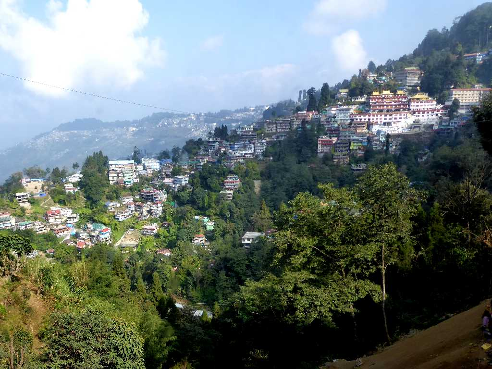
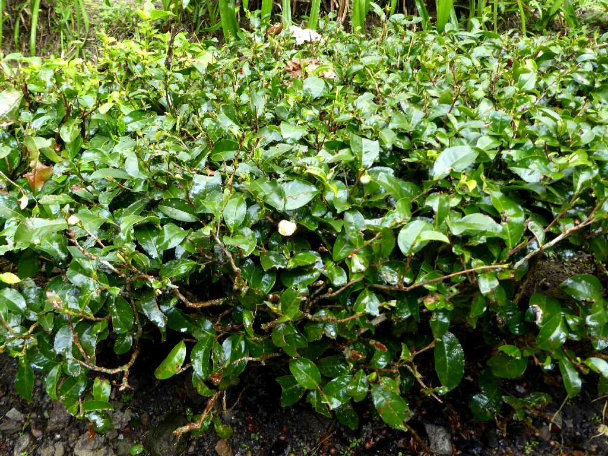
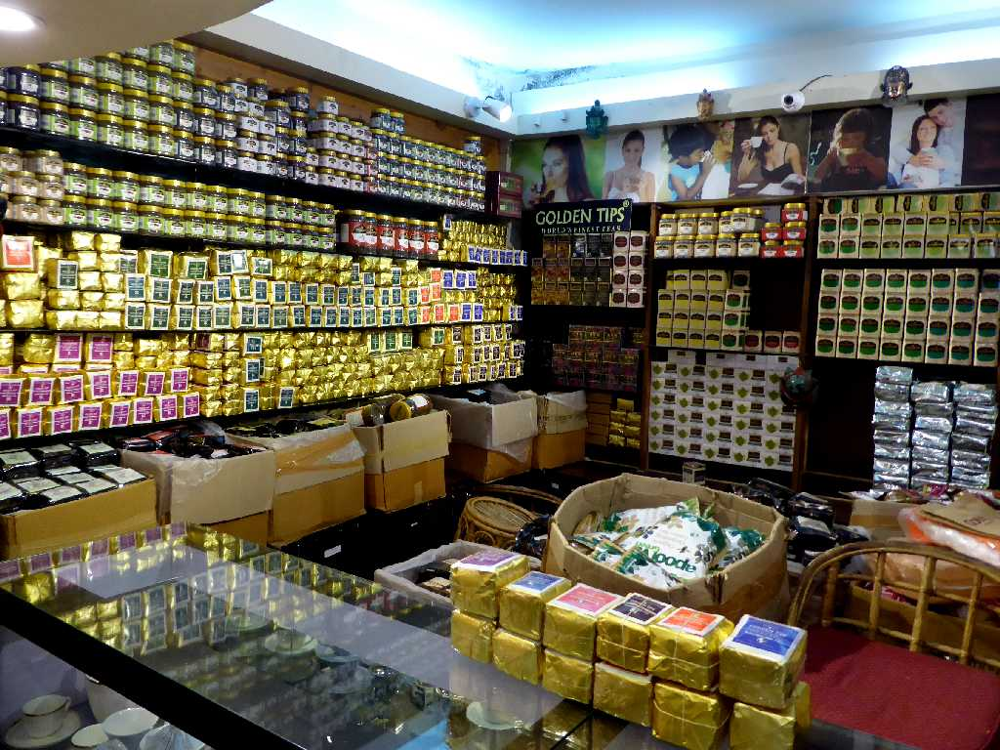
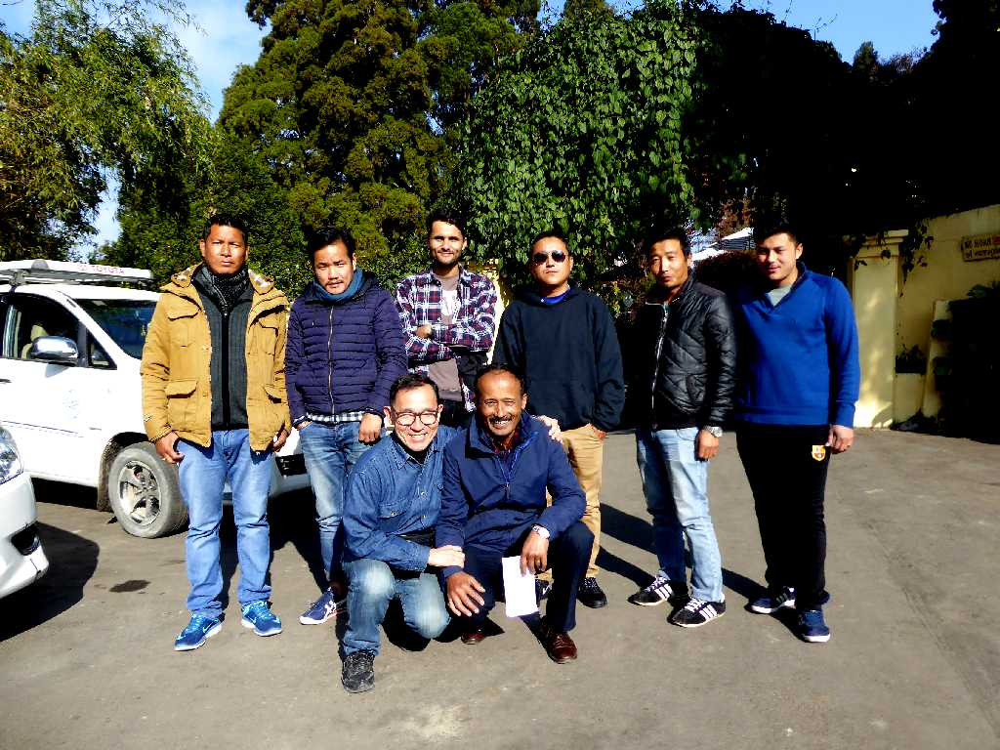

Darjeeling
チベット語のドルジェリン(雪の地)と呼ばれシッキム王国が支配していたが１９世紀初頭からイギリスの植民地になるとダージリンと呼ばれるようになりイギリス人の避暑地として栄えた

Darjeeling Tea
ダージリンティーは１９世紀中頃からイギリスが中国の茶を栽培しこの地特有の栽培と発酵により世界最高級の紅茶と云われるようになった

Shop Darjeeling Tea
TOY TRAIN Railway Station Darjeeling
紅茶の積出に活躍したナローゲージの愛称トイトレインのダージリン駅

November 30 2017 Darjeeling